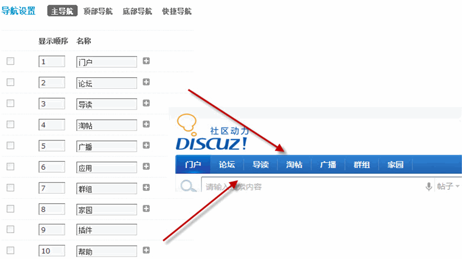
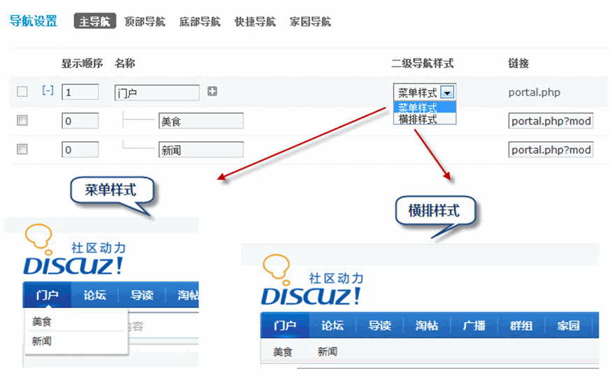
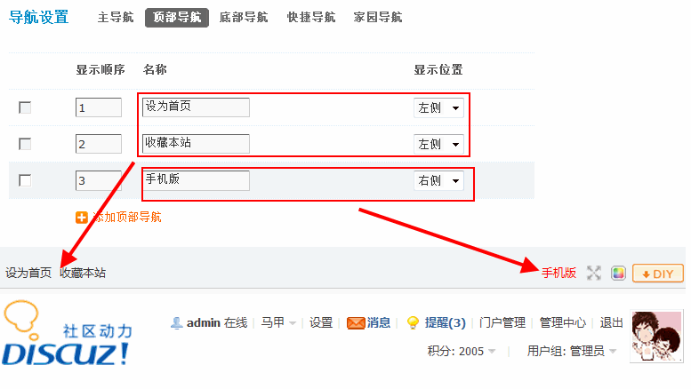
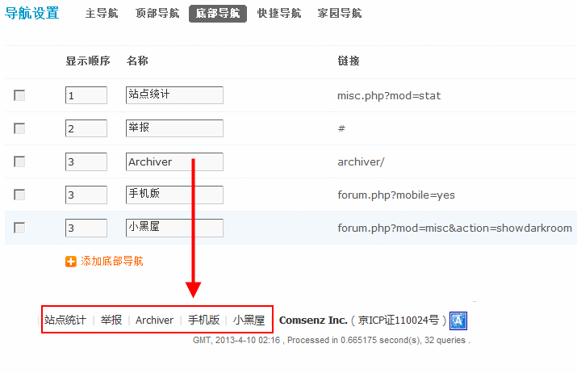
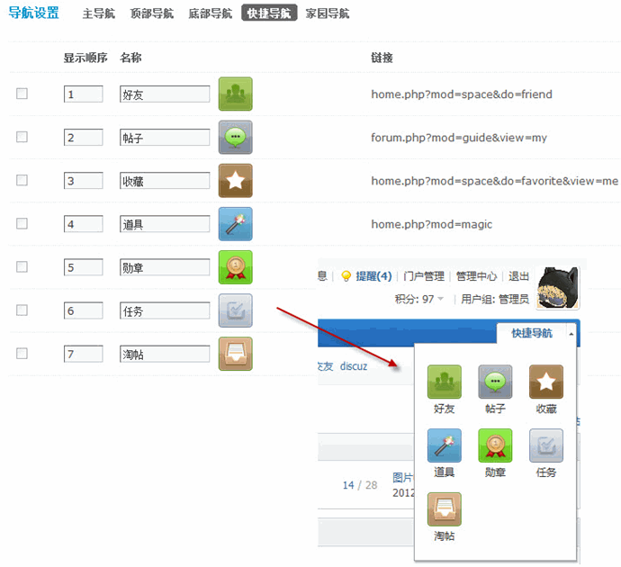
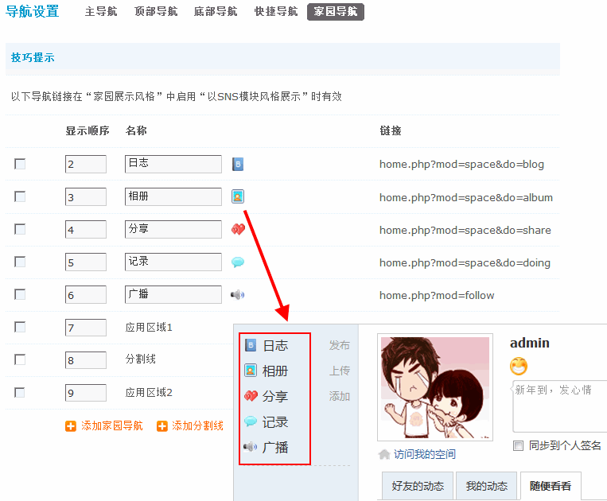
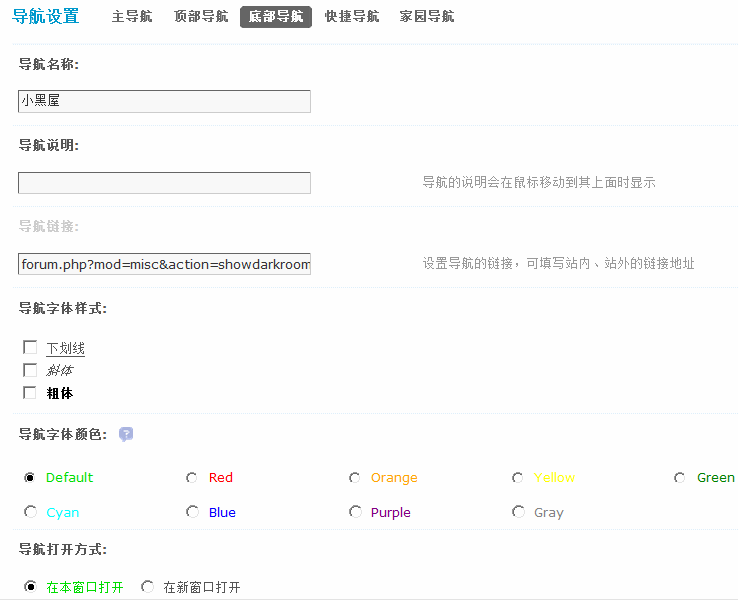

导航设置
网站的导航是给用户提供浏览方向及分类指引的重要功能。 正确并适当地设置好网站的导航，可以更好地展示站点的信息，以及帮助用户更快地熟悉站点内的功能及操作。
一、导航类型 Discuz! X3 中的导航分为五个部分，分别是主导航、顶部导航、底部导航、快捷导航及家园导航。
1、主导航
主导航是站点提供站内信息指引的重要部分，展示位置位于页面的上部。
在主导航的设置参数中，包括二级导航样式、链接、类型、是否设为首页、是否可用等。 其中二级导航的两种样式如下图所示：
2、顶部导航
顶部导航位于页面最顶端，可以在此处放置一些比较醒目的导航信息，自行添加顶部导航时还可选择将导航信息放在顶部的左侧或右侧。
3、底部导航
底部导航位于面面的底端，通常用来展示站点的信息，放置统计工具等。
4、快捷导航
快捷导航位于页面右上方，以直观的图标形式将用户常用的操作列出，方便用户查找信息。
5、家园导航
家园导航位于家园页面中的左侧，在运营过程中站长可以通过自定义的方式进行调整，如将导航分区域、插入分割线等。
二、导航的样式设定
对于每一个导航，都可以对其的字体样式、字体颜色、打开方式、导航图标、导航权限等进行设置，设置时，只要点击相应的导航后面的“编辑”选项即可。不同类型的导航可设置的参数各不相同，可在设置时注意区分。
